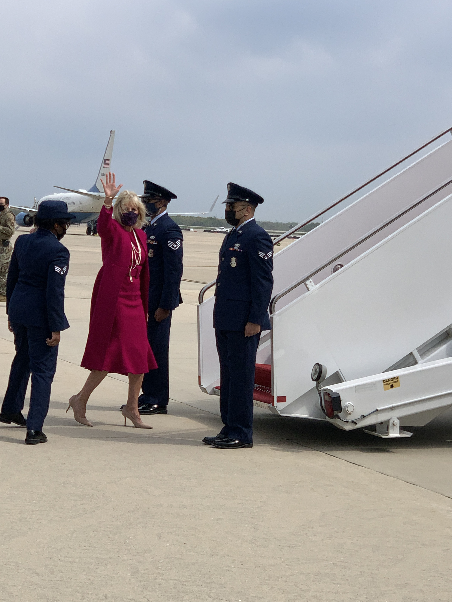

  <div> <div> <div>We are on the move. </div> <div><br> </div> <div>Motorcade left WH at approx 10:27am (still earlier than originally planned but later than the early beat-the-weather departure time). </div> <div><br> </div> <div>Arrival at JBA 10:52am. FLOTUS spoke with a female Air Force of officer before boarding the plane, seemed to be thanking her. </div> <div><br> </div> <div>FLOTUS is wearing a calf-length belted fuchsia dress with a matching fuchsia overcoat, plus a multi-string pearl necklace, gold bracelet, black face mask, and nude stiletto heels. </div> <div><br> </div> <div>CNN’s Kate Bennett, fashion spotter extraordinaire, believes it is a Brandon Maxwell she has worn before, including during her photo shoot for People. <a href="https://people.com/style/brandon-maxwell-shares-sentiment-dr-jill-biden-people-cover-dress/">https://people.com/style/brandon-maxwell-shares-sentiment-dr-jill-biden-people-cover-dress/</a></div> <div><br> </div> <div>We are flying in a C-32 with a flight time of 4 hours and 5 minutes. The TVs on the plane are showing CNN, which is reporting about Ma’Khia Bryant, the 16 year-old fatally shot yesterday by police in Columbus, Ohio. </div> <div><br> </div> <div> <div>Original wheels up time 11:50am EST. Original ABQ arrival time 1:55pm MST. </div> <div><br> </div> <div>Actually wheels up approx 11:22am EST. See you in NM! Land of Enchantment and green chile! <br> </div> <div><br> </div> </div> <div><br> </div> <div><br> </div> <div><br> </div> <div><br> </div> <div> <div>Sent from my iPhone</div> <div>Jada Yuan</div> <div>Political Features Writer, <i>The Washington Post</i></div> <div>▊▊▊▊▊▊▊▊▊▊</div> <div>C: ▊▊▊▊▊▊▊▊▊▊</div> <div>Twitter: @jadabird</div> <div>IG: @alphajada</div> </div> </div> </div> 